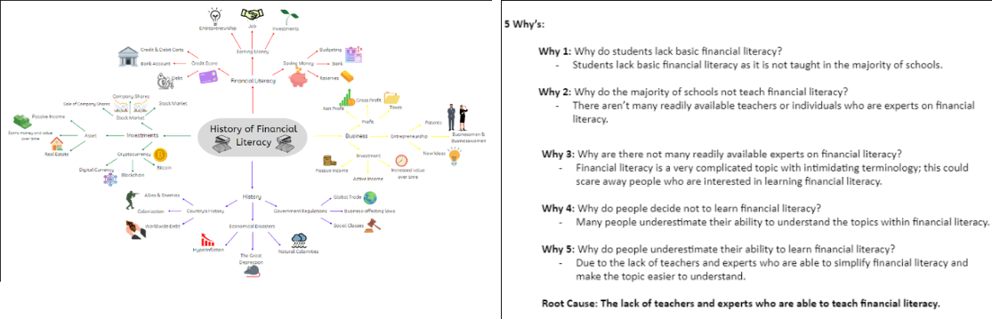

Streaming Content and Tools
Let's now proceed to the main subject of our website, our stream!
We are now in Quarter 2!
During first quarter, we focused on our background investigation and audience analysis such as the importance of financial literacy and survey for determining our audience. But what would be the major content of our website? Our material would be financial literacy, as previously indicated in our first quarter's portfolio and team introduction (visible on the about section in the Home Page). Why financial literacy? Well, that would be the focus of this folder. We will be explaining in detailed why we have decided financial literacy to be our final stream content.
Our group used our last quarter IPBA materials to brainstorm about which content we would be streaming. Within this, we used basic research, 5 Whys, and numerous mindmaps to gain new insights and ideas about the world of Financial Literacy and fill our gaps of knowledge about it.

When deciding if we should keep the same topic from our previous quarter’s IPBA as our streaming content, we considered if Financial Literacy was relevant to the present day. We also had to assess if this topic would be of interest to our target demographic; high school students around the world. Our topic would also need to solve a problem for our viewers, the lack of financial literacy. With our content, we believe that our viewers will not only be entertained by our stream but also be more educated once the stream ends. Furthermore, our group was already comfortable with the topic of financial literacy as we have already done numerous pages of research on this topic.
Once all of our boxes were ticked, we ultimately decided on having Financial Literacy as the content of our stream in which we identified our goals. You may see the summarized poster versions of it below.
.jpg)
...
We have identified our goals and stream content.
But what should our streaming tools be? How should we stream? In our past lesson, we had to choose which broadcasting tools we will be using for our stream. After brainstorming, we have decided on the following:
Broadcasting Software
The streaming software that our group has decided to use is OBS or Open Broadcaster Software. Open Broadcaster Software, more popularly known as OBS or OBS Studio is a free, open-source software. It is mainly used for live streaming, content creation, and screen capturing. It’s perfect for beginners as it's one of the most flexible, free pieces of streaming software; it’s also simple to understand. This powerful application is used by a large number of content creators and streamers due to its numerous features and workability. Below are our reasons why we decided to use this software.
Broadcasting Tools
Webcam - One of the most essential pieces of equipment for live streaming is a webcam. Its main purpose is to allow the streamer to engage with the viewers by showing their reactions, emotions, and thoughts. Our group will be using this to allow our viewers to see our emotions, reactions, and body language.
Clear Microphone - A clear microphone is necessary for live streaming in order to greatly improve the quality of a Livestream. It enables a streamer to use a variety of audio recording devices, such as those used for various types of interactions. Additionally, a clear microphone will help viewers understand the streamer’s words more as it will provide clarity and cancel out background noise. For these reasons, we will be using a clear microphone in our future stream.
Strong and Stable Internet Connection - A reliable internet connection is necessary for live streaming in order to maintain a smooth and enjoyable stream. A strong and stable internet connection will also improve the quality of a live stream as the audience won’t be seeing any delay or blur in the live stream. It also allows the steamer to quickly reply to his/her live chatbox. For these reasons, we’ll try our best to use a strong and stable internet connection (Ideally 25Mbps or higher) during our future stream.
Proper Hardware - Laptops and Computers with appropriate specifications for streaming will help in creating a smooth and enjoyable live stream. A low-end laptop might not be able to stream and have multiple applications open at the same time; this might cause a stream to lag or even crash. Due to these reasons, in our future Livestream, we’ll be using available hardware of the highest specifications.